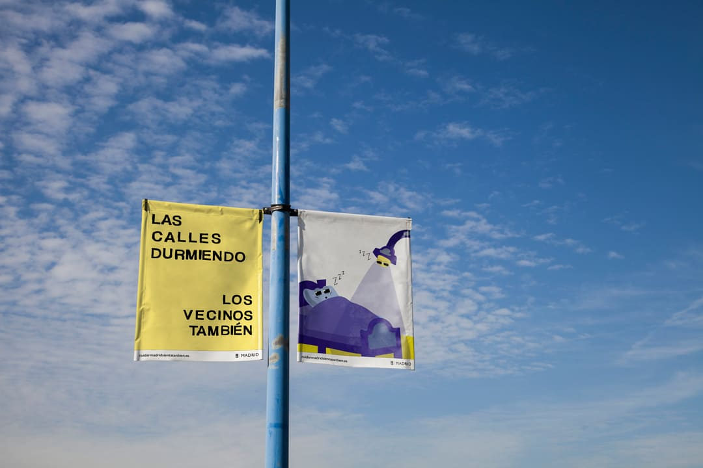
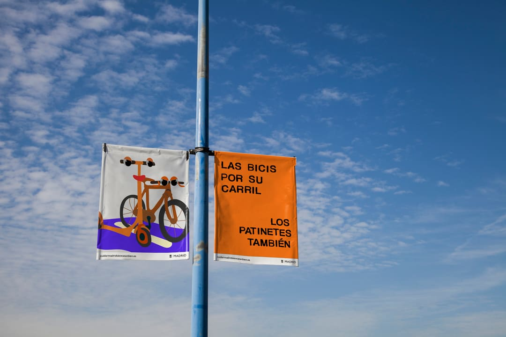
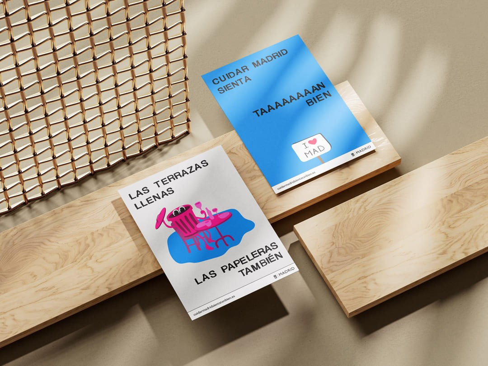
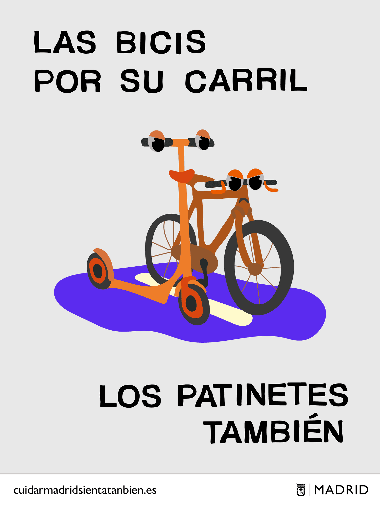
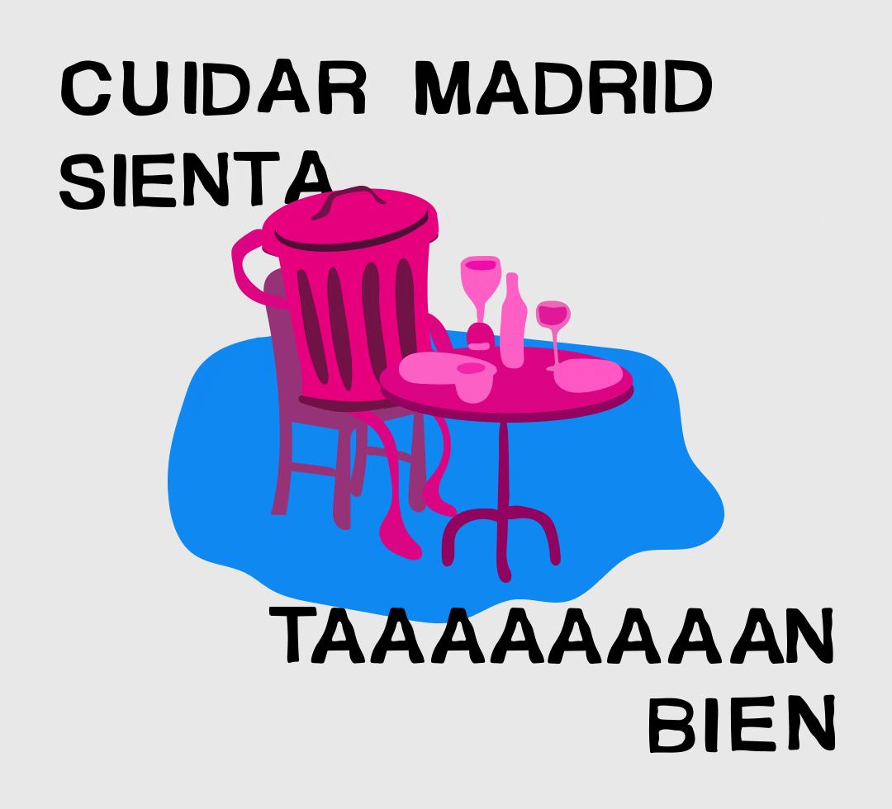
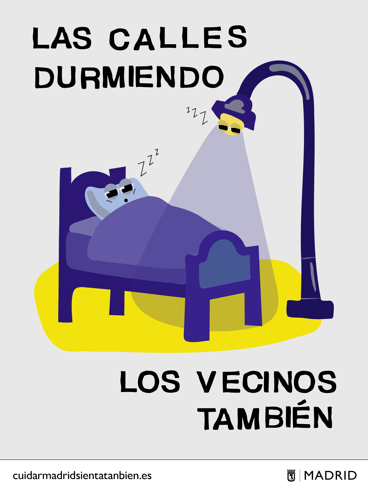
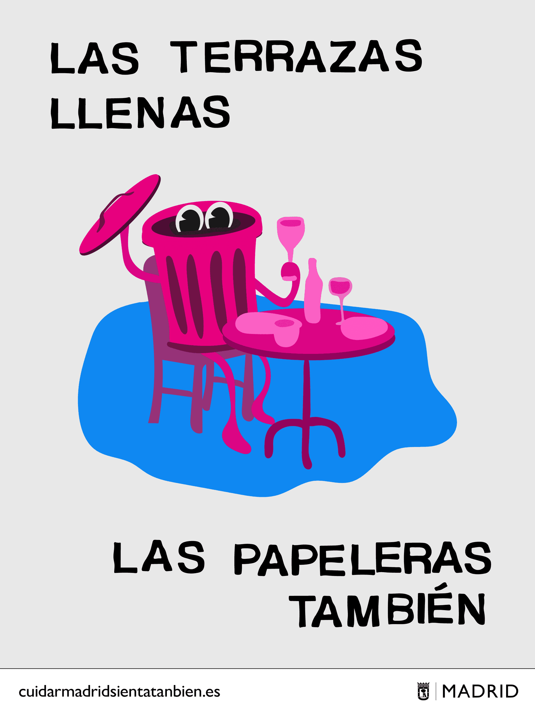

Cuidar Madrid
Cuidar Madrid sienta tan bien
Una campaña que propone una mirada positiva sobre el civismo urbano, entendiendo el cuidado de la ciudad como bienestar colectivo.




Concepto
Cuidar Madrid sienta tan bien propone una campaña de civismo que cambia el tono habitual de las campañas institucionales. En lugar de centrarse en la prohibición o el castigo, la campaña plantea el cuidado de la ciudad como una experiencia positiva y compartida. El mensaje parte de una idea simple: cuando cuidamos el espacio público, también nos cuidamos a nosotros mismos.

Dirección visual
La dirección de arte utiliza un lenguaje visual cercano y optimista para conectar con la vida cotidiana de la ciudad. Colores luminosos, composiciones claras y escenas reconocibles transforman gestos cotidianos en momentos positivos asociados al cuidado del entorno. El objetivo es generar una imagen amable y contemporánea que invite a participar en lugar de imponer normas.




Sistema de campaña
La campaña se construye como un sistema adaptable a diferentes situaciones de civismo urbano. Cada pieza presenta una acción concreta —cuidar el espacio público, respetar el entorno o convivir en la ciudad— manteniendo siempre el mismo tono visual y el mismo mensaje central. Este sistema permite extender la campaña a distintos soportes urbanos y digitales manteniendo coherencia y reconocimiento.
Más proyectos


ecoalf
INSEPARABLES
Una campaña conceptual para Ecoalf que plantea una reflexión simple: el destino del ser humano y el de la naturaleza están inevitablemente conectados.


harste
The New Care of Nature
Una marca que explora una nueva relación entre naturaleza y tecnología a través de un universo visual digital.